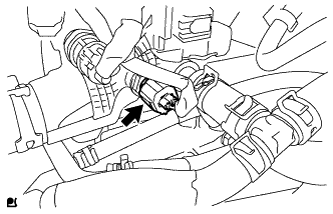
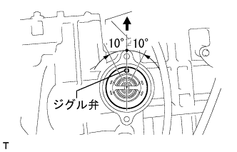

E.F.I. Water Temperature Sensor (2AZ-FE) Installation |
| 1. Install E.F.I. Water Temperature Sensor |
 |
Using SST, install the E.F.I. water temperature sensor with a new gasket.
 |
Connect the E.F.I. water temperature sensor connector.
| 2. Install Air Cleaner Case |
 |
Install the air cleaner case with the 3 bolts and clamp.
Install the air cleaner filter element.
| 3. Install Air Cleaner Cap w/ Air Cleaner Hose |
Install the hinge portion first, then install the air cleaner cap with the 3 clamps.
 |
Install air cleaner hose No.1 to the throttle body assembly and release the lock of air cleaner hose clamp No.1.
 |
Connect the clamp and intake air flow meter connector.
 |
Connect the fuel vapor feed hose and fuel vapor feed hose No.2 to vacuum switching valve assembly No.1.
Connect the clamp and vacuum switching valve connector.
Connect the ventilation hose.
| 4. Install Engine Cover Sub-assembly NO.1 |
 |
Install the engine cover assembly No.1 with the 2 nuts.
| 5. Add Coolant (Toyota Genuine Super Long Life Coolant) |
Close the radiator drain cock plug.
Close the cylinder block drain cock plug.
 |
Fill coolant of the specified concentration up to the B line of the radiator reserve tank.
After installing the reservoir tank cap, warm up the engine until the thermostat opens. (A)
After warm-up, repeat the cycle of 3000rpm engine speed for 5 seconds ←→ idling for 45 seconds 8 times or more (7 minutes or more). (B)
Stop the engine and wait until the coolant cools down, and if the level is below LOW, add coolant of the specified concentration through the filler again and adjust it to between FULL and LOW. (C)
Repeat steps (A) to (C) until the coolant level in the radiator reservoir tank stops dropping.
When the level stops dropping, add coolant of the specified concentration through the filler again to adjust the coolant level in the radiator reservoir tank to between FULL and LOW.
| 6. Inspect for Coolant Leaks |
 |
Fill the radiator with coolant and install a radiator cap tester.
Warm up the engine.
118kPa{1.2kgf/cm2Pump it to } and check that the pressure does not drop.
| 7. Thermostat Installation |
Install a new gasket to the thermostat.
 |
Install the thermostat to the cylinder block with the jiggle valve facing upward.
| 8. Connect Battery Negative Terminal |
| 9. Setting Procedure When Disconnecting/Reconnecting Battery Terminal |
Reference